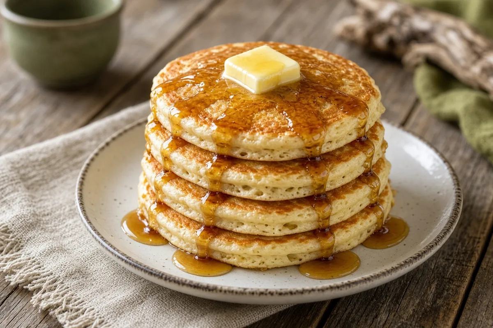

Doctored Buttermilk Pancakes
A box mix that comes out like diner pancakes. The richer batter gives you a golden, buttery outside and a tall, tender middle.

By
Yield: 4 servings
Prep:
Cook:
Total:
Difficulty: Easy
Gear: HexClad skillet or griddle, mixing bowl, whisk
Ingredients
- 2 cups Member's Mark buttermilk pancake mix
- Buttermilk or whole milk, in the amount of water the bag calls for, swapped one for one
- 2 eggs
- 3 Tbsp melted butter, plus more for the pan
- 1 tsp vanilla
- 1/2 tsp cinnamon
- Pinch of salt
- 1/2 cup cottage cheese, blended smooth, optional, for a protein boost
Instructions
- Whisk the eggs, buttermilk, melted butter, vanilla, and cottage cheese (if using) together.
- Add the mix, cinnamon, and salt, and stir just until combined. Leave the lumps in, since overmixing makes them tough.
- Rest the batter 5-10 minutes so it thickens and puffs.
- Heat the pan over medium-low and give it a thin swipe of butter.
- Pour about 1/4 cup of batter per pancake. Flip when bubbles pop on top and the edges look dry, about 2 minutes.
- Cook the second side 1 more minute, until it's golden and springs back.
Notes: Blueberry: drop the berries onto each pancake in the pan instead of stirring them into the batter. Lowcountry brown butter pecan: brown the butter first and add 1/3 cup toasted chopped pecans. Banana bread: mash in 1 ripe banana and add a pinch of nutmeg. Topping: real maple syrup, or warm berries simmered with a little butter. The cottage cheese adds about 3-4 g of protein per serving without making the pancakes heavy. Hold extras in a 200°F oven on a rack so they don't steam soggy.